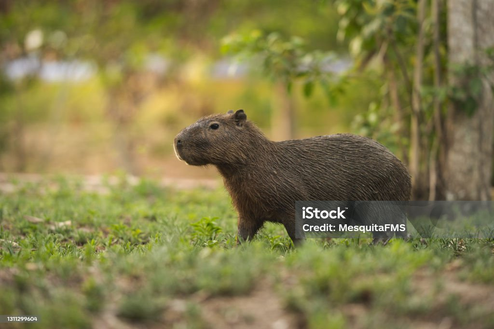
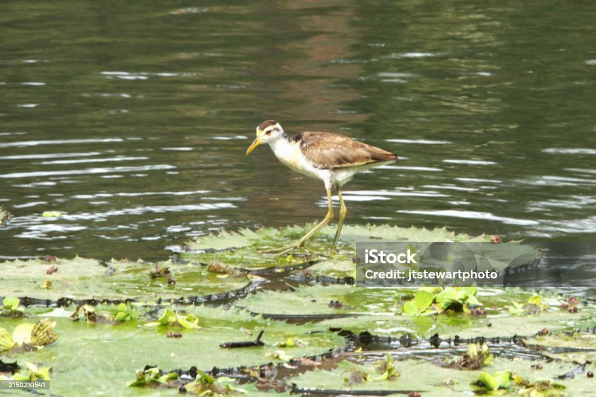
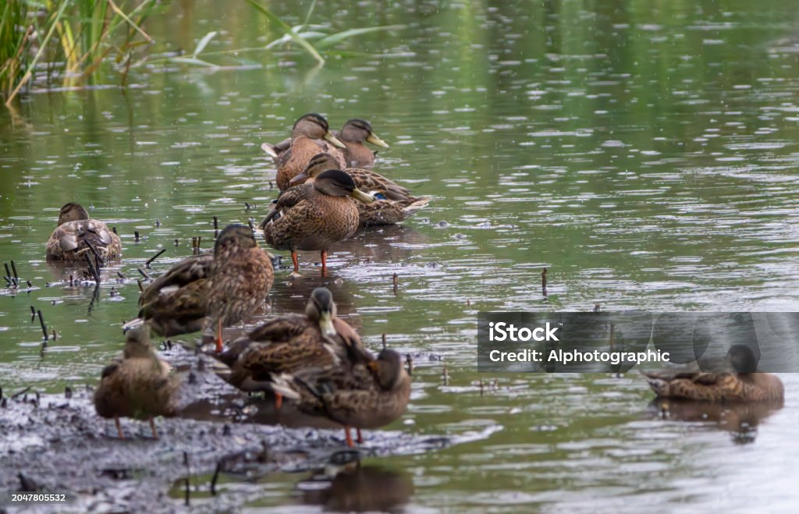
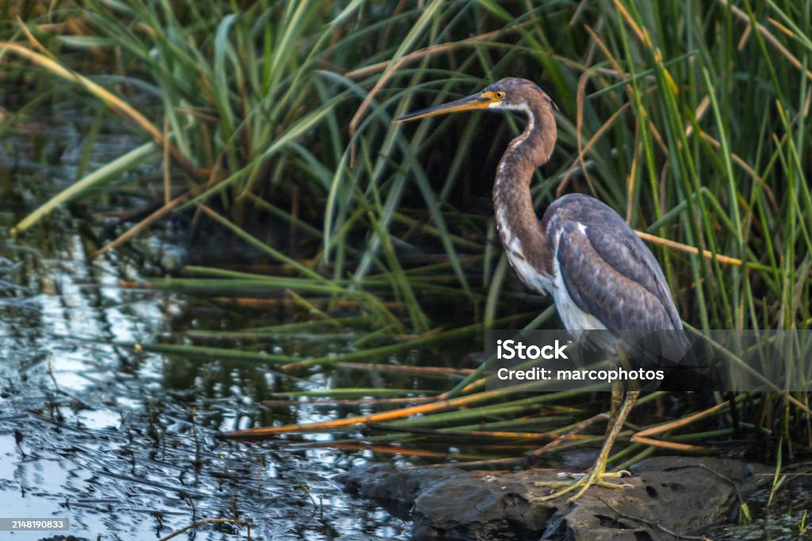
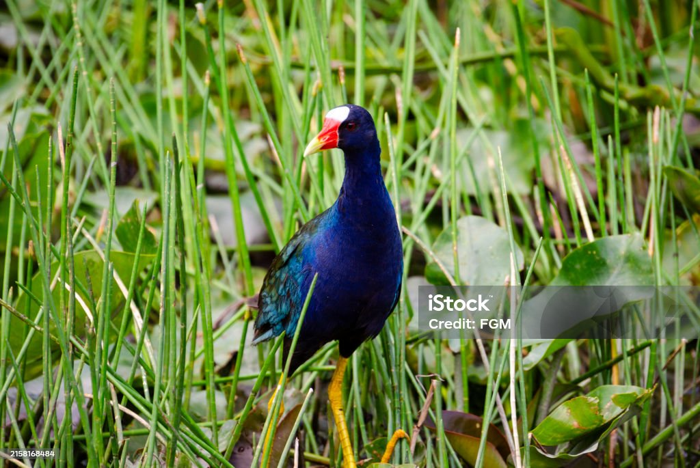

imagen de la flora del parque

Carpincho en su hábitat natural(El carpincho, también conocido como capibara (Hydrochoerus hydrochaeris), es el roedor más grande del mundo. Originario de América del Sur, habita en zonas húmedas, como ríos, pantanos y lagunas. Es un animal semiacuático, con patas palmeadas que le permiten nadar con facilidad)

Ave jacana relajada(La jacana es un tipo de ave acuática que pertenece a la familia Jacanidae, conocida por sus largos dedos y uñas, que le permiten caminar fácilmente sobre la vegetación flotante de lagos y pantanos, como lirios acuáticos.)

Bandada de patos y su familia(
El pato es un ave acuática que pertenece a la familia Anatidae. Es conocido por su cuerpo compacto, patas cortas, y pico ancho y aplanado, adaptado para filtrar agua y alimento.).

Garza tricolor en su habitat natural(La garza tricolor (Egretta tricolor) es un ave acuática de la familia Ardeidae, que habita en zonas costeras y cuerpos de agua dulce en América, especialmente en el sur de los Estados Unidos, el Caribe y América Central. Tiene un plumaje distintivo de tres colores)

Gallineta morada parece estar explorando o buscando alimento en el pantano(La gallineta morada (Porphyrio martinica), también conocida como calamoncillo americano, es un ave acuática de la familia Rallidae. Se distingue por su vibrante plumaje morado-azulado, con tonos verdosos en el dorso y las alas, y por su pico rojo brillante con la punta amarilla.)